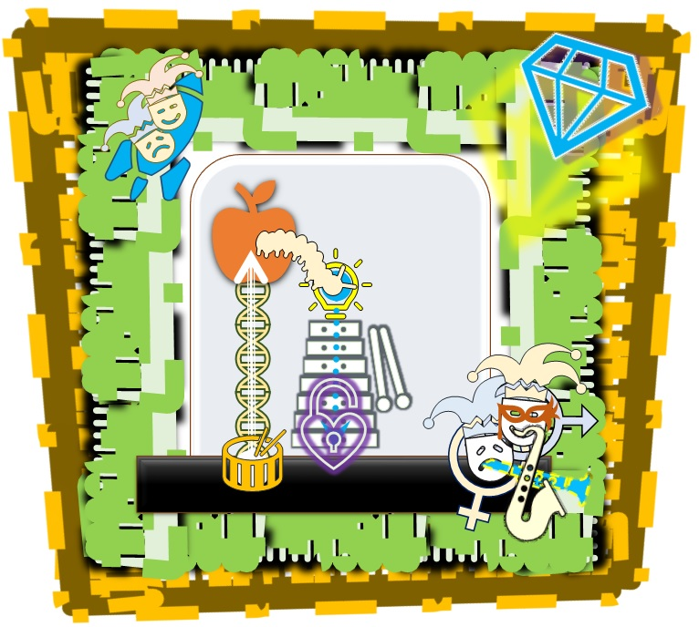

Главный "секрет" достижения Кругом ("десяткой" учеников Каббалистов "смешанного типа" - Мужчиной и Женщиной Он создал их) "духовного поручительства", являющегося тем же самым в точности, что и выполнение человеком в Круге первой и главной "Заповеди Творца, Свят Благословен Он" "возлюби ближнего своего, как самого себя", выполняемой человеком в форме "от обратного" как "не делай другому то, что ненавистно тебе" (аl taase lekhavercha ma shesanu aleycha), достигаемой человеком в процессе регулярной совместной "духовной работы Творца, Свят Благословен Он", объединяющимся с единомышленниками в каббалистических "Кругах" и "десятках", заключается в том, что никаких "договоров" оно от Круга и человека заключать не требует, а "полный успех", равно как и "неуспех", в нем человека вообще никак не зависит от того, как воспринимается этот процесс кем бы то ни было еще, включая товарищей и подруг по Кругу, не зависит от их "успехов" и вообще желания и настроения входить с человеком в эту форму практически "здесь и сейчас", а зависит только от твердой решимости самого человека "поручиться" за них перед Творцом, Свят Благословен Он, в молитве, сделав это действие посредством последовательного повторения "привычкой, ставшей второй натурой" в Круге и по-жизни, когда человек молится за товарищей и подруг определенным образом, которым он сообщает Творцу, Свят Благословен Он (без кавычек) о своем намерении принять на себя все возможные и невозможные гипотетические, и вполне реальные, все без каких либо исключений, "негативные последствия" предполагаемых "небезупречных поступков", мыслей, решений и т.д. и т.п. своих товарищей. Не важно совершенно, есть они или нет, важно намерение и практическая форма молитвы за конкретных товарищей и подруг, являющихся единомышленниками человека по Кругу/десятке в регулярной совместной "духовной работе", поименно и детально проговаривая Творцу, Свят Благословен Он, свои намерения принять на себя все возможные последствия того, что можно было бы назвать "кармой", или еще каким-то образом "нежелательным" для "оберегаемого" товарища, если они есть, были или будут, т.е. "если что-то такое должно случиться с ней/ним, то пусть, Господь, это произойдет не с ним/ней, а со мной, прими, Господь, желание моего сердца и мое свободное волеизъявление, храни и береги моих дорогих и любимых сердцу моему товарищей и подруг от того, чтобы я чувствовал от них что либо кроме совершенной и абсолютной Твоей благословенной любви, независимо от того, что говорят об этом мои "неисправленные" пока еще "органы ощущений" и внешний разум "этого мира", поскольку я знаю абсолютно точно, Твоей Благословенной Милостью, что именно это их отношение ко мне является Истиной, а мое ощущение, будто в товарище или подруге есть какой-либо изъян или несовершенство, являются ложью и созданы Тобой специально для того, чтобы я мог, отталкиваясь от этого, удостоиться стать самостоятельным творением, имеющим свободную Волю стремиться в жизни и Пути только доставлять наслаждение Тебе, Господь, и возлюбленным подругам и товарищам, явно и чувственно, здесь и сейчас. Благословенный, да поможет ближнему! Амен ве Амен".
СДЕЛАЕМ И УСЛЫШИМ!